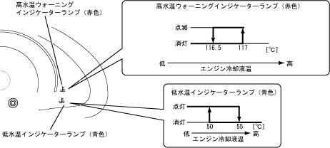

| ウォーターテンパラチャゲージ |
| ● |
エンジン冷却液温をインジケーターランプの点灯/消灯で表示する，低水温インジケーターランプおよび高水温インジケーターランプを採用しました。
|
| ● |
エンジン冷却液温が約117℃以上になると，高水温ウォーニングインジケーターランプ（赤色）の点滅表示を行います。
|
| ● |
エンジン冷却液温が約50℃未満になると，低水温インジケーターランプ（青色）の点灯表示を行います。
|
| ● |
エンジン冷却液温が約55～116.5℃の範囲内であれば適温とし，高水温ウォーニング・低水温インジケーターランプを消灯します。
|
|  |
 ウォーターテンパラチャゲージ作動 ウォーターテンパラチャゲージ作動
|